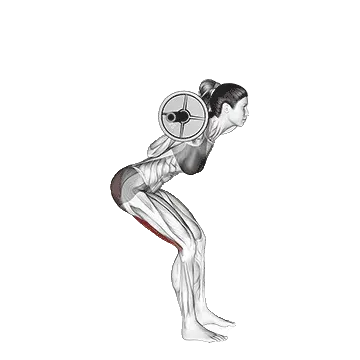

Good morning
Good morning permite consultar el peso medio y los estándares de fuerza como referencia dentro de piernas. Los músculos principales son Isquiotibiales, Glúteo mayor.

Peso medio: Intermedio
Referencia para una persona de nivel intermedio.
Hombres
191 lb
Mujeres
97 lb
Peso medio de Good morning [1RM]
| Nivel | ||
|---|---|---|
| Principiante | 52 lb | 28 lb |
| Novato | 109 lb | 57 lb |
| Intermedio | 191 lb | 97 lb |
| Avanzado | 296 lb | 148 lb |
| Élite | 416 lb | 207 lb |
Nota: estos estándares son estimaciones de 1RM basadas en levantadores promedio. Pueden variar según el peso corporal, la edad y otros factores personales. Consulta los datos detallados en la tabla inferior.
Estándares de fuerza de Good morning (lb)
Hombres por peso corporal (lb) [1RM]
| Peso corporal | Principiante | Novato | Intermedio | Avanzado | Élite |
|---|---|---|---|---|---|
| 110 | 17 | 50 | 104 | 178 | 266 |
| 120 | 22 | 59 | 117 | 195 | 288 |
| 130 | 28 | 69 | 131 | 212 | 308 |
| 140 | 34 | 78 | 143 | 228 | 328 |
| 150 | 40 | 87 | 156 | 244 | 346 |
| 160 | 47 | 97 | 168 | 259 | 364 |
| 170 | 53 | 106 | 180 | 274 | 382 |
| 180 | 59 | 114 | 191 | 288 | 398 |
| 190 | 66 | 123 | 203 | 302 | 415 |
| 200 | 72 | 132 | 214 | 315 | 430 |
| 210 | 78 | 140 | 224 | 328 | 445 |
| 220 | 84 | 148 | 235 | 341 | 460 |
| 230 | 91 | 157 | 245 | 353 | 474 |
| 240 | 97 | 165 | 255 | 365 | 488 |
| 250 | 103 | 172 | 265 | 376 | 501 |
| 260 | 109 | 180 | 274 | 388 | 514 |
| 270 | 115 | 188 | 283 | 399 | 527 |
| 280 | 120 | 195 | 292 | 410 | 540 |
| 290 | 126 | 202 | 301 | 420 | 552 |
| 300 | 132 | 210 | 310 | 430 | 564 |
| 310 | 138 | 217 | 319 | 441 | 575 |
Hombres por edad [1RM]
| Edad | Principiante | Novato | Intermedio | Avanzado | Élite |
|---|---|---|---|---|---|
| 15 | 45 | 93 | 163 | 252 | 355 |
| 20 | 51 | 106 | 186 | 288 | 406 |
| 25 | 52 | 109 | 191 | 296 | 416 |
| 30 | 52 | 109 | 191 | 296 | 416 |
| 35 | 52 | 109 | 191 | 296 | 416 |
| 40 | 52 | 109 | 191 | 296 | 416 |
| 45 | 50 | 104 | 181 | 280 | 395 |
| 50 | 47 | 97 | 170 | 263 | 371 |
| 55 | 43 | 90 | 157 | 243 | 343 |
| 60 | 39 | 82 | 144 | 222 | 313 |
| 65 | 36 | 74 | 130 | 201 | 283 |
| 70 | 32 | 67 | 116 | 180 | 254 |
| 75 | 29 | 60 | 104 | 161 | 227 |
| 80 | 26 | 53 | 93 | 144 | 203 |
| 85 | 23 | 48 | 83 | 129 | 182 |
| 90 | 21 | 43 | 75 | 116 | 164 |
Mujeres por peso corporal (lb) [1RM]
| Peso corporal | Principiante | Novato | Intermedio | Avanzado | Élite |
|---|---|---|---|---|---|
| 90 | 16 | 38 | 70 | 113 | 164 |
| 100 | 19 | 42 | 76 | 121 | 173 |
| 110 | 21 | 46 | 82 | 128 | 181 |
| 120 | 24 | 50 | 87 | 134 | 188 |
| 130 | 27 | 54 | 92 | 140 | 196 |
| 140 | 29 | 57 | 96 | 146 | 202 |
| 150 | 32 | 60 | 101 | 151 | 209 |
| 160 | 34 | 64 | 105 | 156 | 215 |
| 170 | 36 | 67 | 109 | 161 | 221 |
| 180 | 39 | 70 | 113 | 166 | 226 |
| 190 | 41 | 73 | 117 | 170 | 231 |
| 200 | 43 | 76 | 120 | 175 | 236 |
| 210 | 45 | 79 | 124 | 179 | 241 |
| 220 | 47 | 81 | 127 | 183 | 246 |
| 230 | 49 | 84 | 130 | 187 | 250 |
| 240 | 51 | 86 | 133 | 191 | 255 |
| 250 | 53 | 89 | 136 | 194 | 259 |
| 260 | 55 | 91 | 139 | 198 | 263 |
Mujeres por edad [1RM]
| Edad | Principiante | Novato | Intermedio | Avanzado | Élite |
|---|---|---|---|---|---|
| 15 | 24 | 48 | 82 | 126 | 176 |
| 20 | 27 | 55 | 94 | 144 | 201 |
| 25 | 28 | 57 | 97 | 148 | 207 |
| 30 | 28 | 57 | 97 | 148 | 207 |
| 35 | 28 | 57 | 97 | 148 | 207 |
| 40 | 28 | 57 | 97 | 148 | 207 |
| 45 | 27 | 54 | 92 | 140 | 196 |
| 50 | 25 | 50 | 86 | 132 | 184 |
| 55 | 23 | 47 | 80 | 122 | 170 |
| 60 | 21 | 43 | 73 | 111 | 155 |
| 65 | 19 | 38 | 66 | 100 | 140 |
| 70 | 17 | 34 | 59 | 90 | 126 |
| 75 | 15 | 31 | 53 | 81 | 113 |
| 80 | 14 | 28 | 47 | 72 | 101 |
| 85 | 12 | 25 | 42 | 65 | 90 |
| 90 | 11 | 22 | 38 | 58 | 81 |
Nota: una barra estándar de gimnasio suele pesar 44 lb.
Registra y analiza en la app Shiba
Consulta pesos, repeticiones y progreso en un solo lugar.
Cómo leer la tabla
| Nivel | Descripción | Distribución |
|---|---|---|
| Principiante | Domina la técnica correcta y entrena de forma constante durante al menos 1 mes. | Parte inferior 5% |
| Novato | Entrena de forma constante durante al menos 6 meses. | Top 80% |
| Intermedio | Entrena de forma constante durante al menos 2 años. | Top 50% |
| Avanzado | Entrena de forma constante durante más de 5 años. | Top 20% |
| Élite | Entrena este ejercicio de forma especializada durante más de 5 años. | Top 5% |
Otros ejercicios
Piernas
Zercher sentadilla
Piernas
Lunge con barra
Piernas / Barra
Aducción de cadera
Piernas
Sentadilla overhead
Piernas
Elevación de gemelos con barra
Piernas / Barra
Sentadilla con mancuernas
Piernas / Mancuernas
Sentadilla split
Piernas
Elevación de gemelos con mancuernas
Piernas / Mancuernas
Pull through en cable
Piernas / Cable
Curl femoral de pie
Piernas
Sentadilla con landmine
Piernas
Inverso lunge con barra
Piernas / Barra